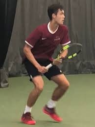
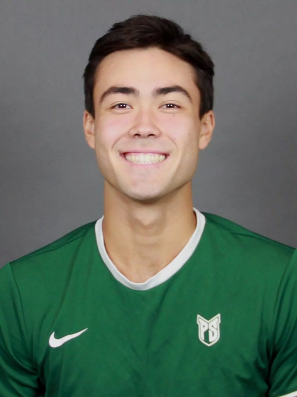

Private lessons
1-on-1 instruction tailored to your strokes, footwork, and goals. The fastest way to improve at any level.
- 60 or 90 minutes
- Beginner through advanced
- Video review on request
Portland, Oregon · Private & group tennis coaching
Ryan Nakajima is a Portland-born tennis coach and former Portland State University collegiate player. He offers private lessons, group clinics, and junior development across the Portland metro area for all ages and skill levels — from first-time beginners to tournament juniors and competitive adults.
Ryan Nakajima grew up on Portland's public courts and went on to play collegiate tennis at Portland State University. After his college career, he turned to coaching full-time so the next generation of Portland players could get the kind of structured, technical instruction that's hard to find outside of a varsity program.
His coaching is direct and fundamentals-first: clean footwork, balanced contact, repeatable patterns, and the competitive habits that hold up under pressure. Whether you're picking up a racquet for the first time or preparing for sectionals, sessions are built around your goals and tracked across lessons so you can see the progress.
Ryan is a native Portlander and coaches across the metro area year-round (indoor in winter, outdoor when the rain finally stops).


Coaching options for every level. All sessions are 1-on-1 unless noted.
1-on-1 instruction tailored to your strokes, footwork, and goals. The fastest way to improve at any level.
Age-appropriate programs for kids 6–17, from red-ball fundamentals to high-school and tournament prep.
Small groups (2–4 players) at similar levels. Drills, live-ball, and structured point play.
For players competing at OSAA high-school level or pursuing college recruiting. Match strategy, mental game, conditioning.
Whether you're new to the sport or a 4.0 looking to break into 4.5, lessons target the specific patterns that hold you back.
For tournament players who need a high-quality hitting partner and live-ball reps between lessons.
Transparent rates. Court fees included. Multi-lesson packages save 10–15%.
$85/ 60 min
Most popular
$385/ 5 × 60 min
$45/ player / 90 min
Junior rates and family bundles available on request. Cancellations within 24 hours are charged at 50%.
Coaching across the Portland metro area at public and private courts:
Court location is arranged once we lock in your day and time — typically within 15 minutes of your home or office.